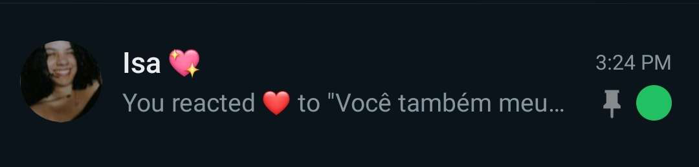
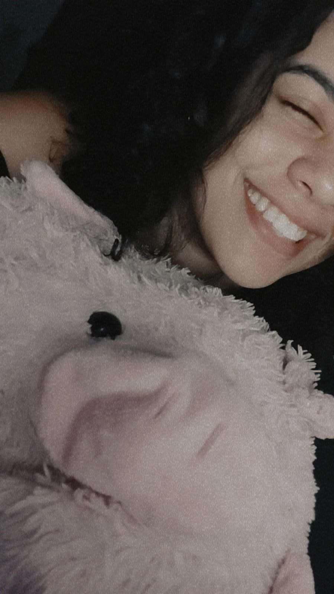
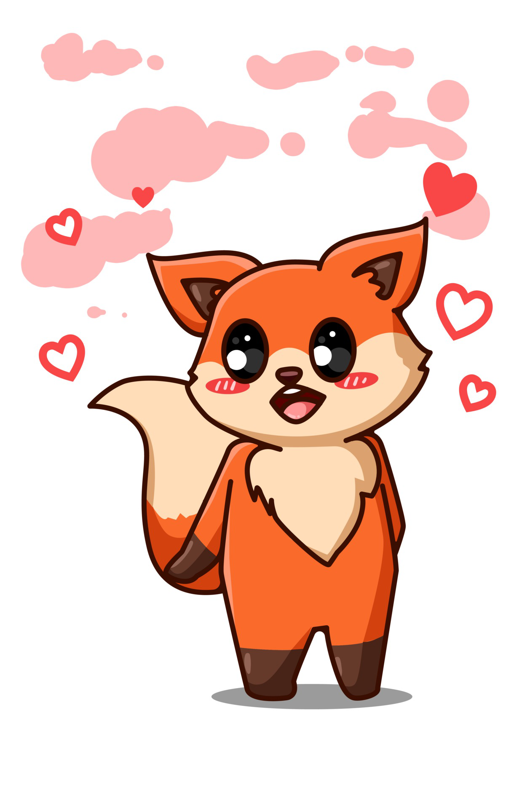
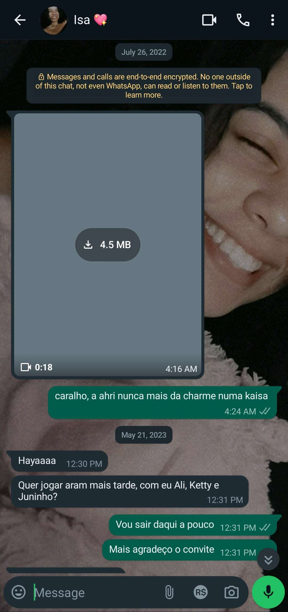

Bem-vinda
Você está pronta?
Antes de começar, confirme:
Você conhece esta pessoa?
Tem certeza?
Olhe bem pra isso:
Espere...

É a Isa que está acessando essa página agora?
Sim, Isa
Para que tudo dê certo, você precisa estar ouvindo a música de fundo.
Quando estiver ouvindo-a, clique no botão.
Bom, então vamos lá...
eu queria que você soubesse de algumas coisas.
Fiz esse presente para você.
As vezes é difícil imaginar...
que alguém pode aparecer do nada...
e transformar completamente...
a nossa perspectiva de vida.
Assim como você fez com a minha.
E eu quero te mostrar isso.
1. Mensagens
Em tantos anos eu nunca senti tanto interesse em uma pessoa.
E quando digo interesse, é a vontade de conhecer, conversar e me envolver nos seus assuntos.
Conversas que demoram 15 minutos para serem lidas e mais de meia hora para serem respondidas.

Inúmeras mensagens é um conteúdo escrito muito pequeno relacionado às milhares de coisas que ainda quero ler de você.
Inúmeras mensagens, colocadas em uma conversa real, está muito longe das milhões de palavras que ainda quero muito ouvir você falar.
2. Momentos marcantes
Essa é minha foto favorita sua.
Eu me apaixonei por você mais de uma vez.
Cada uma dessas vezes eu me descobri mais apaixonado por você, e vou te contar quais foram:
- A primeira vez assim que escutei sua voz pela primeira vez, eu simplesmente entrei em outra dimensão eu apenas queria escutar aquela melodia que saia da sua boca.
- A segunda vez, me lembro perfeitamente: foi quando começamos a trocar mensagens mais frequentemente, ficava/fico todo bobo quando tem algo seu não importa o que seja.
- A terceira vez foi quando passamos nossa primeira noite "juntos" aquele dia foi inesquecivel, não conseguia parar de admirar você e seu sorriso.
E esse é só o começo.
O nosso começo.
3. O que você mudou em mim
absolutamente tudo üíñ
O que isso tem a ver, você se perguntaria?
Antes de começarmos a estar juntos, eu estava há 2 anos simplesmente existindo, não conseguia fazer nada alem de me trancar no quarto e jogar.
Essa motivação de estar voltando com tudo de uma vez, está completamente relacionada ao que você causou em mim.
Para mim, eu não iria sentir nada por alguem nunca mais.
Por conta de traumas do passado eu me fechei muito.
Pelo menos antes de você.
Você quem me fez senir algo que eu jamais pensaria em sentir.
Você quem me fez querer mudar o mundo.
As vezes me pego pensando no que teria acontecido se eu não tivesse você.
Estaria fazendo absolutamente nada, estaria perdido.
Você me faz bem.
Essa foi nossa primeira conversa no WhatsApp
E foi em julho de 2022.
E só de pensar...
onde tudo começou...

E só de pensar...
em tudo que ainda podemos viver juntos...
É de arrepiar.
Você é e sempre será a minha pequena ❤️
Bom...
acho que já não dá mais para adiar.
Eu preciso te fazer a pergunta.
Algo que estou muito seguro em perguntar...
Você está pronta?
Quando estiver, é só apertar o botão.
Então...
agora, olhe nos meus olhos...
Qual foi a resposta?
Obrigado por estar comigo.